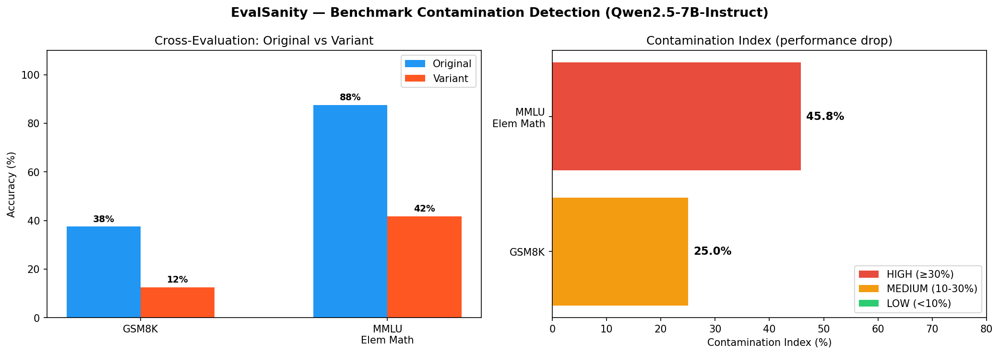
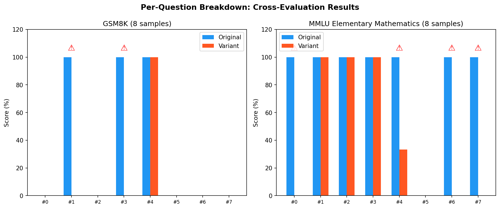

Cross-evaluation results: accuracy on original benchmark questions vs. semantically equivalent rewordings. A significant drop indicates contamination.
Evaluated May 2026 · 4-bit quantized · 2× Tesla T4
| Benchmark | Original | Variant | Drop | Risk | Samples |
|---|---|---|---|---|---|
| MMLU Elementary Mathematics | 87.5% | 31.2% | 56.2% | HIGH | 8 |
| GSM8K | 37.5% | 12.5% | 25.0% | MEDIUM | 8 |


Cross-Evaluation: Each benchmark question is reworded by a dedicated Qwen2.5-3B-Instruct model (loaded separately on GPU 1). The reworded variant preserves meaning and difficulty while changing surface form (names, numbers, entities, phrasing). Semantic similarity is validated via all-MiniLM-L6-v2 (threshold 0.60–0.95). The target model then answers both original and variant questions. A performance drop >30% flags the sample as potentially contaminated.
Contamination Index = (Original Accuracy − Variant Accuracy) × 100